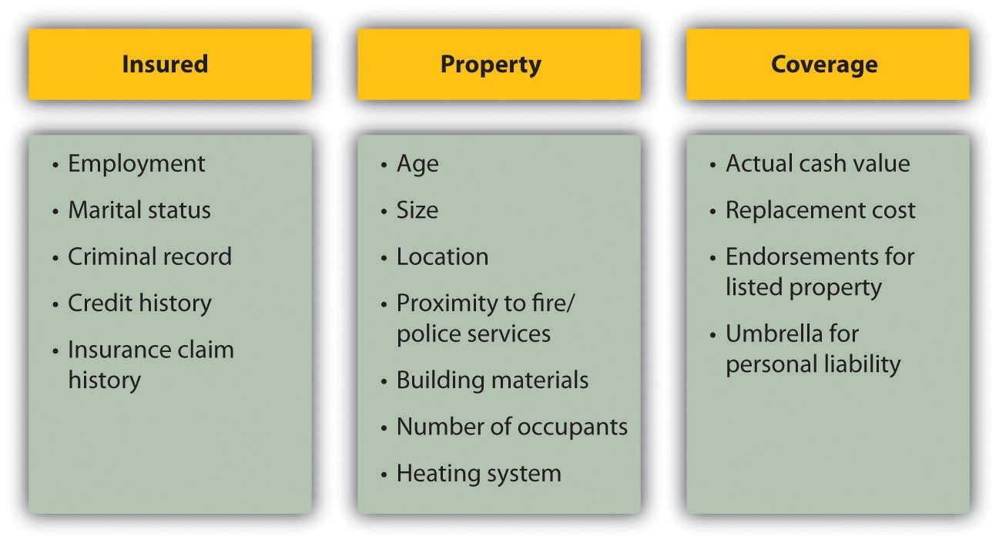
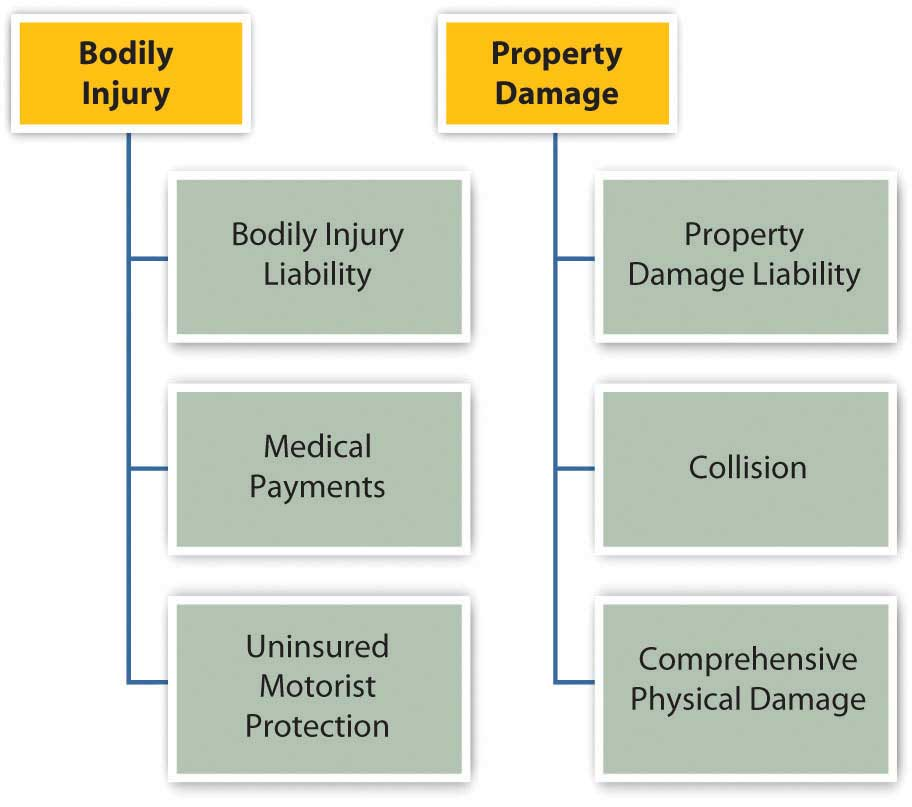
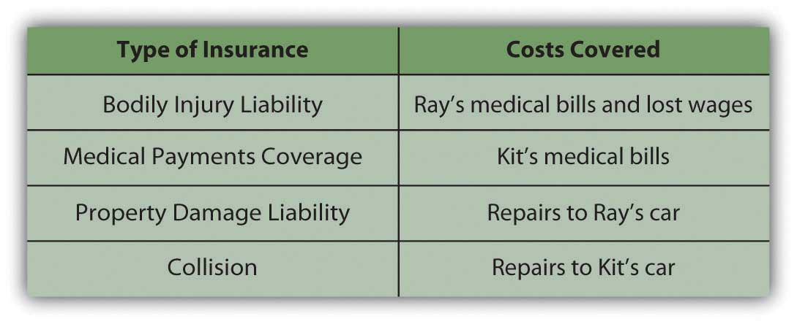

Property insurance is ownership insurance: it insures that the rights of ownership conferred upon you when you purchased your property will remain intact. Typically, property insurance covers loss of use from either damage or theft; loss of value, or the cost of replacement; and liability for any use of the property that causes damage to others or others’ property. For most people, insurable property risks are covered by insuring two kinds of property: car and home.
Loss of use and value can occur from hazards such as fire or weather disasters and from deliberate destruction such as vandalism or theft. When replacement or repair is needed to restore usefulness and value, that cost is the cost of your risk. For example, if your laptop’s hard drive crashes, you not only have the cost of replacing or repairing it, but also the cost of being without your laptop for however long that takes. Insuring your laptop shares that risk (and those costs) with the insurer.
Liability is the risk that your use of your property will injure someone or something else. Ownership implies control of, and therefore responsibility for, property use.
For example, you are liable for your dog’s attack on a pedestrian and for your fallen tree’s damage to a neighbor’s fence. You also are liable for damage a friend causes while driving your car with your permission and for injury to your invited guests who trip over your lawn ornament, fall off your deck, or leave your party drunk.
Legal responsibility can be from
Homeowner’s insurance insures both the structure and the personal possessions that make the house your home. Renter’s insurance protects your possessions even if you are not the owner of your dwelling. You may not think you need insurance until you are the homeowner, but even when you don’t need to insure against possible damage or liability for your dwelling, you can still insure your possessions. Even if your furniture came from your aunt’s house or a yard sale, it could cost a lot to replace.
If you have especially valuable possessions such as jewelry or fine musical instruments, you may want to insure them separately to get enough coverage for them. Such items are typically referred to as listed propertyValuable property insured separately under a homeowner’s policy. and are insured as endorsementsThe clause of a homeowner’s policy insuring listed property. added on to a homeowners’ or renter’s policy. Items should be appraised by a certified appraiser to determine their replacement or insured value.
A good precaution is to have an up-to-date inventory of your possessions such as furniture, clothing, electronics, and appliances, along with photographs or video showing these items in your home. That inventory should be kept somewhere else, such as a safe deposit box. If the house suffered damage, you would then have the inventory to help you document your losses.
A homeowners’ policy covers damage to the structure itself as well as any outbuildings on the property and, in some cases, even the landscaping or infrastructure on the grounds, such as a driveway.
A homeowners’ policy does not cover
According to information from the Insurances Services Office (http://www.iso.com), an insurance industry data and research company, hazards covered by the homeowner’s policy include
Note that floods and earthquakes are not covered. A homeowner in a flood- or earthquake-prone area may buy special coverage, either from a private insurer or from a federal or state program.
Homeowners’ insurance covers the less direct costs of hazards as well. For example, the costs of removing damaged goods or temporary repairs are covered. The cost of temporary housing and extra living expenses while repairs are made is covered, although usually for a limited time or amount.
Homeowners’ policies cover liability for injuries on the property and for injuries that the homeowner may accidentally inflict. You may also want to add an umbrella policyPersonal liability insurance in attached to a homeowner’s policy. that covers personal liabilities such as slander, libel, and defamation of character. An umbrella policy may also extend over other assets, such as vehicles or rentals covered by other insurance carriers. If you participate in activities where you are assuming responsibilities for others—you are taking the Cub Scout pack out for a hike, for example, or volunteering at your local recycling center—you may want such extended liability coverage available through your homeowners’ policy (also available separately).
Home insurance policies automatically cover your possessions for up to 40 percent of the house’s insured value. You can buy more coverage if you think they are worth more. The benefits are specified as either actual cash valueMarket value of insured property at time of loss. or replacement costCost of replacing insured property at time of loss.. Actual cash value tries to estimate the actual market value of the item at the time of loss, so it accounts for the original cost less any depreciation that has occurred. Replacement cost is the cost of replacing the item. For most items, the actual cash value is less.
For example, say your policy insures items at actual cash value. You are claiming the loss of a ten-year-old washer and dryer that were ruined when a pipe burst and your basement flooded. Your coverage could mean a benefit of $100 (based on the market price of ten-year-old appliances). However, to replace your appliances with comparable new ones could cost $1,000 or more.
The actual cash value is almost always less than the replacement value, because prices generally rise over time and because items generally depreciate (rather than appreciate) in value. A policy that specifies benefits as replacement costs offers more actual coverage. Guaranteed replacement costsThe full cost of replacing insured items at time of loss. are the full cost of replacing your items, while extended replacement costsInsured amount capped at a specified percentage of actual cash value. are capped at some percentage—for example, 125 percent of actual cash value.
You buy home insurance by paying a premium to the insurance company. The insurance purchase is arranged through a broker, who may represent more than one insurance company. The broker should be knowledgeable about various policies, coverage, and premiums offered by different insurers.
The amount of the premium is determined by the insurer’s risk—the more risk, the higher the premium. Risk is determined by
To gauge the risk of the insured, the insurer needs information about your personal circumstances and history, the nature of the property, and the amount of coverage desired for protection. This information is summarized in Figure 10.4 "Factors that Determine Insurance Premiums".
Figure 10.4 Factors that Determine Insurance Premiums
Insurers may offer discounts for enhancements that lower risks, such as alarm systems or upgraded electrical systems. (Smoke detectors are required by law in every state.) You also may be offered a discount for being a loyal customer, for example, by insuring both your car and home with the same company. Be sure to ask your insurance broker about available discounts for the following:
The average premium for homeowners insurance in 2006 in the United States was $804 a year, and for renters insurance was $189 a year. That year, Arizona homeowners paid an average of $640 for insurance that cost $1,409 in Texas.Insurance Information Institute, http://www.iii.org/media/facts/statsbyissue/homeowners (accessed May 3, 2009). Premiums can vary, even for the same levels of coverage for the same insured. You should compare policies offered by different insurers to shop around for the best premium for the coverage you want.
If you own and drive a car, you must have car insurance. Your car accident may affect not only you and your car, but also the health and property of others. A car accident often involves a second party, and so legal and financial responsibility must be assigned and covered by both parties. In the United States, financial responsibility laws in each state mandate minimal car insurance, although what’s “minimal” varies by state.
Conventionally, a victim or plaintiff in an accident is reimbursed by the driver at fault or by his or her insurer. Fault has to be established, and the amount of the claim agreed to. In practice, this has often been done only through extensive litigation.
Some states in the United States and provinces in Canada have adopted some form of no-fault insuranceA system of auto insurance where the insured’s insurance covers physical and property damage and liability, regardless of “fault” determined., in which, regardless of fault, an injured’s own insurance covers his or her damages and injuries, and a victim’s ability to sue the driver at fault is limited. The idea is to lower the incidence of court cases and speed up compensation for victims. The states with compulsory no-fault auto insurance, in which personal injury protection (PIP) is required, include Florida, Hawaii, Kansas, Kentucky, Massachusetts, Michigan, Minnesota, New Jersey, New York, North Dakota, Pennsylvania, Utah, and Puerto Rico. Eleven other states use no-fault as add-on or optional insurance.Insurance Information Institute, http://www.iii.org/media/hottopics/insurance/nofault (accessed May 3, 2009). The remaining states in the United States use the conventional tort system (suing for damages in court). Understanding the laws of the state where you drive will help you to make better insurance decisions.
Auto insurance policies cover two types of consequences: bodily injury and property damage. Each covers three types of financial losses. Figure 10.5 "Automobile Insurance Coverage" shows these different kinds of coverage.
Figure 10.5 Automobile Insurance Coverage
Bodily injury liabilityResponsibility for financial losses from injuries sustained in an accident for people outside of the car of the driver at fault. refers to the financial losses of people in the other car that are injured in an accident you cause, including their medical expenses, loss of income, and your legal fees. Injuries to people in your car or to yourself are covered by medical payments coverageResponsibility for financial losses from injuries sustained in an accident for people inside of the car of the driver at fault.. Uninsured motorist protectionCoverage of financial losses from injuries sustained in an accident if the driver at fault has insufficient insurance. covers your injuries if the accident is caused by someone with insufficient insurance or by an unidentified driver.
Property damage liabilityResponsibility for damage to property owned by people other than the driver at fault. covers the costs to other people’s property from damage that you cause, while collisionResponsibility for damage to the property of the driver at fault. covers the costs of damage to your own property. Collision coverage is limited to the market value of the car at the time, usually defined by the National Automobile Dealers Association’s (NADA) Official Used Car Guide or “blue book” (http://www.nada.org). To reduce their risk, the lenders financing your car loan will require that you carry adequate collision coverage. Comprehensive physical damageCoverage for damage from hazards. covers your losses from anything other than a collision, such as theft, weather damage, acts of nature, or hitting an animal.
Auto insurance coverage is limited, depending on the policy. The limits are typically stated in numbers representing thousands of dollars. For example, 100/300/50 means that $100,000 is the limit on the payment to one person in an accident; $300,000 is the limit on the amount paid in total (for all people) per accident; and $50,000 is the limit on the amount of property damage liability that can be paid out.
Here’s an example of how it all works. Kit is driving home one night from a late shift at the convenience store where he works. Sleepy, he drifts into the other lane of the two-lane road and hits an oncoming car driven by Ray. Both Kit and Ray are injured, and both cars are damaged. Figure 10.6 "Auto Insurance Coverage Example" shows how Kit’s insurance will cover the costs.
Figure 10.6 Auto Insurance Coverage Example
As with any insurance, the cost of having an insurer assume risk is related to the cost of that risk. The cost of auto insurance is related to three factors that create risk: the car, the driver, and the driving environment—the region or rating territory.
The model, style, and age of the car determine how costly it may be to repair or replace, and therefore the potential cost of damage or collision. The higher that cost is, the higher the cost of insuring the car. For example, a 2009 luxury car will cost more to insure than a 2002 sedan. Also, different models have different safety features that may lower the potential cost of injury to passengers, and those features may lower the cost of insurance. Different models may come with different security devices or be more or less attractive to thieves, affecting the risk of theft.
The driver is an obvious source of risk as the operator of the car. Insurers use various demographic factors such as age, education level, marital status, gender, and driving habits to determine which kinds of drivers present more risk. Not surprisingly, young drivers (ages sixteen to twenty-four) of both sexes and elderly drivers (over seventy) are the riskiest. Twice as many males as females die in auto accidents, but more females suffer injuries. Nationally, in any year your chances of being injured in a car accident are about one in a thousand.U.S. Census Bureau, The Disaster Center, http://www.disastercenter.com/traffic (accessed May 3, 2009).
Your driving history and especially your accident claim history can affect your premiums, as well as your criminal record and credit score. In some states, an accident claim can double your cost of insurance over a number of years. Your driving habits—whether or not you use the car to commute to work, for example—can affect your costs as well. Some states offer credits or points that reduce your premium if you have a safe driving record, are a member of the American Automobile Association (AAA), or have passed a driver education course.
Where you live and drive also matters. Insurers use police statistics to determine rates of traffic accidents, auto theft, and vandalism, for example. If you are in an accident-prone area or higher crime region, you may be able to offset those costs by installing safety and security features to your car.
Premium rates vary, so you should always shop around. You can shop through a broker or directly. Online discount auto insurers have become increasingly popular in recent years. Their rates may be lower, but the same cautions apply as for other high-stakes transactions conducted online.
Also, premiums are not the only cost of auto insurance. You should also consider the insurer’s reliability in addressing a claim. Chances are you rely on your car to get to school, to work, or for your daily errands or recreational activities. Your car is also a substantial investment, and you may still be paying off debt from financing your car. Losing your car to repairs and perhaps being injured yourself is no small inconvenience and can seriously disrupt your life. You want to be working with an insurer who will cooperate in trying to get you and your car back on the road as soon as possible. You can check your insurer’s reputation by the record of complaints against it, filed with your state’s agency of banking and insurance, or with your state’s attorney general’s office.
Auto insurance coverage insures bodily injury through
Auto insurance coverage insures property damage through